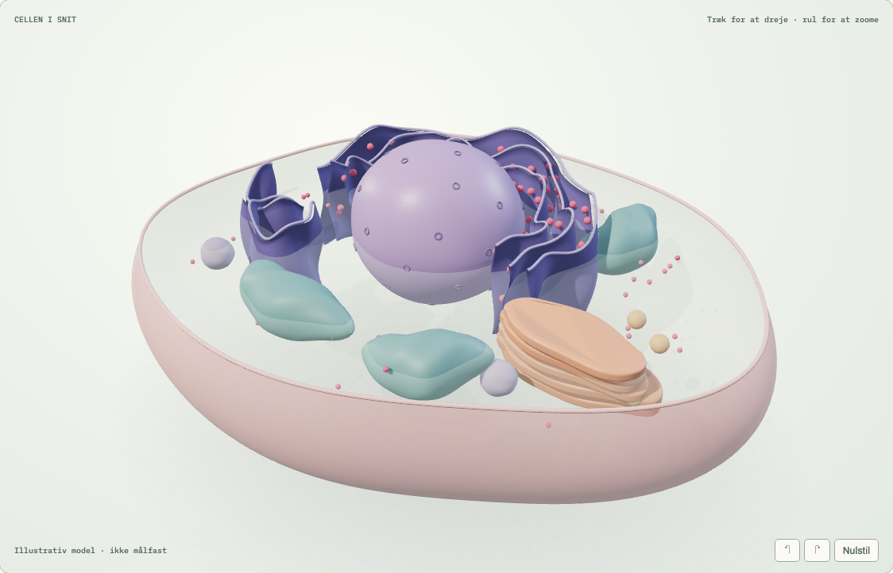

Bygger 3D-cellen …
CELLEN I SNITTræk for at dreje · rul for at zoome
Illustrativ model · ikke målfast

3D kunne ikke starte i denne browser. Her ses et billede af arbejdsmodellen.
Selvstændig arbejdsmodel Alfa
Bygger 3D-cellen …

3D kunne ikke starte i denne browser. Her ses et billede af arbejdsmodellen.
Formålet er at udvikle selve 3D-cellen før integration i »Byg cellen« og membrantransport. Cellelegemet er vist i snit, og cytoplasmaet er delvist gennemsigtigt, så placeringen inde i cellen kan ses. Der er ingen væskeoverflade i en rigtig celle; den plane grænse i modellen er en illustrativ snitflade.
At »åbne« en organel betyder her at fjerne en del af dens membran for at se ind. Det er en visningsfunktion. Cellekernen viser rumligt kromatin og kernelegeme. Mitokondrierne viser indre membranfolder, cristae. Størrelser, membrantykkelser, antal og farver er forenklede. Åbningsanimationer og formgivning er endnu ikke elevafprøvet.